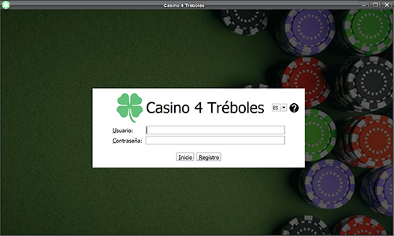
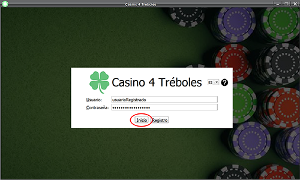
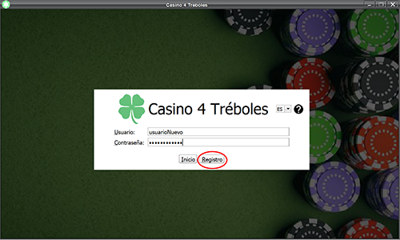
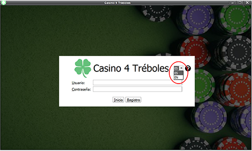
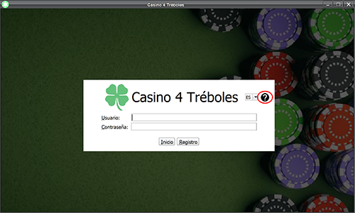

Casino 4 Tréboles
Introducción
Esta aplicación permite conectarse con el Casino 4 Tréboles.
Para ello cuenta con un sistema de registro.
En la ventana principal se puede ver el formulario de ingreso junto con la opción de cambio de idioma
(ES-español y EN-inglés) y un botón de ayuda para solucionar dudas frecuentes de los usuarios.

En la ventana de inicio encontramos:
- Campo de usuario: Donde se introduce el alias de la cuenta.
- Campo de contraseña: Donde se introduce la contraseña asociada al alias.
- Botón Inicio: Continúa hasta el casino en caso de tener una cuenta creada.

- Botón Registro: Continúa hasta una página de registro en caso de no tener una cuenta creada.

- Cambio de idioma: Permite seleccionar el idioma en que se mostrará la aplicación.

- Botón ayuda: Permite visualizar la ayuda de la página actual.
